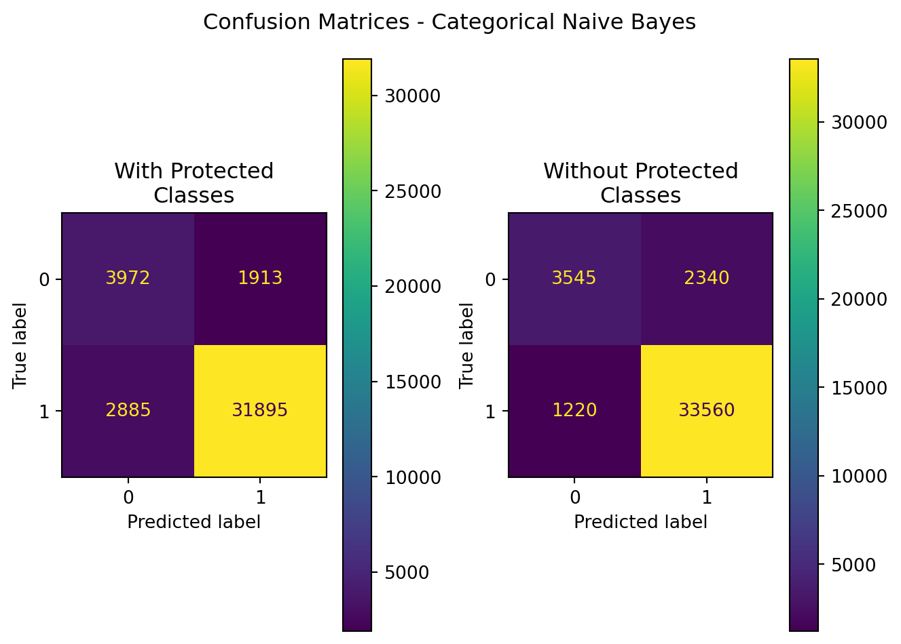
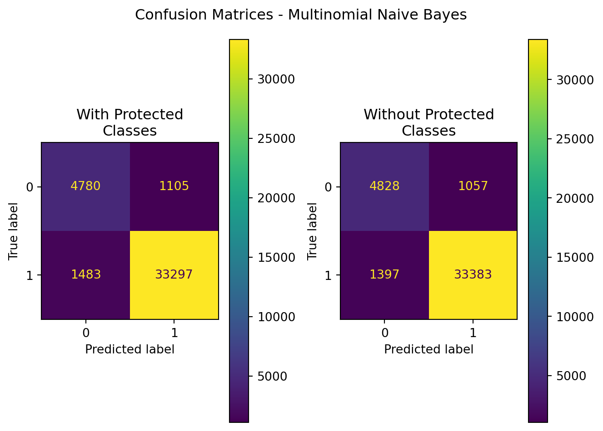
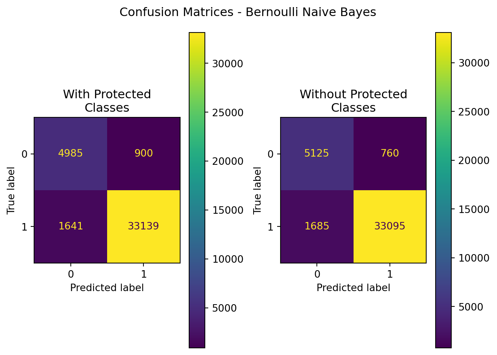

#for Bernoulli NB
data = pd.read_csv('../data/data-one-hot.csv')
data_npc = pd.read_csv('../data/data-one-hot-npc.csv')
# labels=pd.read_csv('../data/final_clean_r2.csv')['outcome']
fr = pd.read_csv('../data/final_clean_r2.csv')
gaussian_data = fr.copy()
labels = fr['outcome'].copy()
fr.drop(columns=['outcome','purchaser_type'],inplace=True)Appendix D — Naive Bayes Code
D.1 Data PreProcessing for CategoricalNB
#prep the data - turn binary back to true/false
mapper = {
'applicant_race':{
'American Indian/Alaska Native':0b0000000000000000001,
'Asian':0b0000000000000000010,
'Asian Indian':0b0000000000000000100,
'Chinese':0b0000000000000001000,
'Filipino':0b0000000000000010000,
'Japanese':0b0000000000000100000,
'Korean':0b0000000000001000000,
'Vietnamese':0b0000000000010000000,
'Other Asian':0b0000000000100000000,
'Black/African American':0b0000000001000000000,
'Native Hawaiian/Pacific Islander':0b0000000010000000000,
'Native Hawaiian':0b0000000100000000000,
'Guamanian/Chamorro':0b0000001000000000000,
'Samoan':0b0000010000000000000,
'Other Pacific Islander':0b0000100000000000000,
'White':0b0001000000000000000,
'Information not provided':0b0010000000000000000,
'Not Applicable':0b0100000000000000000,
'No Co-applicant':0b1000000000000000000
},
'co-applicant_race':{
'American Indian/Alaska Native':0b0000000000000000001,
'Asian':0b0000000000000000010,
'Asian Indian':0b0000000000000000100,
'Chinese':0b0000000000000001000,
'Filipino':0b0000000000000010000,
'Japanese':0b0000000000000100000,
'Korean':0b0000000000001000000,
'Vietnamese':0b0000000000010000000,
'Other Asian':0b0000000000100000000,
'Black/African American':0b0000000001000000000,
'Native Hawaiian/Pacific Islander':0b0000000010000000000,
'Native Hawaiian':0b0000000100000000000,
'Guamanian/Chamorro':0b0000001000000000000,
'Samoan':0b0000010000000000000,
'Other Pacific Islander':0b0000100000000000000,
'White':0b0001000000000000000,
'Information not provided':0b0010000000000000000,
'Not Applicable':0b0100000000000000000,
'No Co-applicant':0b1000000000000000000
},
'applicant_ethnicity':{
'Hispanic/Latino':0b000000001,
'Mexican':0b000000010,
'Puerto Rican':0b000000100,
'Cuban':0b000001000,
'Other Hispanic/Latino':0b000010000,
'Not Hispanic/Latino':0b000100000,
'Information Not Provided':0b001000000,
'Not Applicable':0b010000000,
'No Co-applicant':0b100000000
},
'co-applicant_ethnicity':{
'Hispanic/Latino':0b000000001,
'Mexican':0b000000010,
'Puerto Rican':0b000000100,
'Cuban':0b000001000,
'Other Hispanic/Latino':0b000010000,
'Not Hispanic/Latino':0b000100000,
'Information Not Provided':0b001000000,
'Not Applicable':0b010000000,
'No Co-applicant':0b100000000
},
'aus':{
'Desktop Underwriter':0b00000001,
'Loan Prospector/Product Advisor':0b00000010,
'TOTAL Scorecard':0b00000100,
'GUS':0b00001000,
'Other':0b00010000,
'Internal Proprietary':0b00100000,
'Not applicable':0b01000000,
'Exempt':0b10000000,
},
}
new_mapper = {}
for k,v in mapper.items():
new_mapper[k] = {}
#print(k)
for j,w in v.items():
#print(w,j)
new_mapper[k][w] = j
#drop columns that will not be leveraged in MCA
fr.drop(
labels = [
'balloon_payment',
'interest_only_payment',
'other_nonamortizing_features',
'income_from_median',
'state_code',
'county_code'
],
axis=1,inplace=True
)
#identify numeric columns to convert to categorical
numerics = [
'income',
'loan_amount',
'interest_rate',
'total_loan_costs',
'origination_charges',
'discount_points',
'lender_credits',
'loan_term',
'intro_rate_period',
'property_value',
'total_units',
'tract_population',
'tract_minority_population_percent',
'ffiec_msa_md_median_family_income',
'tract_to_msa_income_percentage',
'tract_owner_occupied_units',
'tract_one_to_four_family_homes',
'tract_median_age_of_housing_units',
'loan_to_value_ratio'
]
#set the cutting boundaries
bounds = [i/5 for i in range(1,5)]
for col in numerics:
#income had some errors, for some reason
if col == 'income':
fr.loc[fr[col]<=0,col] = 0.01
fr[col] = np.log(fr[col])
s = fr[col].std()
m = fr[col].mean()
#cut everything based on standard deviations
cut_level = [
m-2*s,
m-s,
m+s,
m+2*s
]
cut_level = [-np.inf] + cut_level + [np.inf]
#assign value based on cut boundaries
fr[col] = pd.cut(
fr[col],
bins=cut_level,
labels=["L","ML","M","MH","H"]
)
#convert to categorical
fr[col] = fr[col].astype('category')
fr[numerics].head(10)| income | loan_amount | interest_rate | total_loan_costs | origination_charges | discount_points | lender_credits | loan_term | intro_rate_period | property_value | total_units | tract_population | tract_minority_population_percent | ffiec_msa_md_median_family_income | tract_to_msa_income_percentage | tract_owner_occupied_units | tract_one_to_four_family_homes | tract_median_age_of_housing_units | loan_to_value_ratio | |
|---|---|---|---|---|---|---|---|---|---|---|---|---|---|---|---|---|---|---|---|
| 0 | M | MH | L | H | H | M | H | M | H | M | M | M | M | M | M | MH | MH | M | M |
| 1 | L | MH | L | M | M | M | M | M | H | H | M | M | ML | M | H | M | L | ML | L |
| 2 | MH | H | ML | M | M | M | M | M | H | H | M | H | M | M | H | M | L | ML | M |
| 3 | M | MH | ML | M | M | M | M | M | H | M | M | H | M | M | H | H | H | ML | M |
| 4 | M | H | ML | M | M | M | M | M | H | H | M | M | M | H | MH | M | M | MH | M |
| 5 | MH | MH | M | MH | M | M | M | M | M | MH | M | M | ML | M | M | M | M | M | M |
| 6 | MH | H | M | M | M | M | M | M | MH | H | M | M | MH | M | M | M | M | M | M |
| 7 | MH | M | ML | M | M | M | M | M | M | H | M | M | ML | M | H | MH | ML | MH | L |
| 8 | M | H | ML | M | M | M | M | M | H | H | M | H | M | M | MH | MH | ML | H | M |
| 9 | M | M | ML | M | M | M | M | M | H | M | M | M | ML | M | MH | MH | M | ML | ML |
fr_bin = fr[[
'applicant_race',
'applicant_ethnicity',
'co-applicant_race',
'co-applicant_ethnicity',
'aus'
]].copy()
for k,v in new_mapper.items():
for l,w in v.items():
fr_bin[k+'_'+w] = (fr_bin[k]&l > 0).astype(int)
fr_bin.drop(
labels=[
'applicant_race',
'applicant_ethnicity',
'co-applicant_race',
'co-applicant_ethnicity',
'aus'
],
inplace=True,
axis=1
)
fr.drop(
labels=[
'applicant_race',
'applicant_ethnicity',
'co-applicant_race',
'co-applicant_ethnicity',
'denial_reason',
'aus',
# 'outcome',
'action_taken'
],
inplace=True,
axis=1
)
display(
fr.head(10),
fr_bin.head(10)
)| derived_sex | preapproval | open-end_line_of_credit | loan_amount | loan_to_value_ratio | interest_rate | total_loan_costs | origination_charges | discount_points | lender_credits | ... | applicant_age | co-applicant_age | tract_population | tract_minority_population_percent | ffiec_msa_md_median_family_income | tract_to_msa_income_percentage | tract_owner_occupied_units | tract_one_to_four_family_homes | tract_median_age_of_housing_units | company | |
|---|---|---|---|---|---|---|---|---|---|---|---|---|---|---|---|---|---|---|---|---|---|
| 0 | Sex Not Available | 2 | 2 | MH | M | L | H | H | M | H | ... | 3.0 | 7.0 | M | M | M | M | MH | MH | M | JP Morgan |
| 1 | Male | 2 | 2 | MH | L | L | M | M | M | M | ... | 1.0 | 8.0 | M | ML | M | H | M | L | ML | JP Morgan |
| 2 | Sex Not Available | 1 | 2 | H | M | ML | M | M | M | M | ... | 3.0 | 8.0 | H | M | M | H | M | L | ML | JP Morgan |
| 3 | Male | 2 | 2 | MH | M | ML | M | M | M | M | ... | 4.0 | 8.0 | H | M | M | H | H | H | ML | JP Morgan |
| 4 | Joint | 2 | 2 | H | M | ML | M | M | M | M | ... | 1.0 | 1.0 | M | M | H | MH | M | M | MH | JP Morgan |
| 5 | Joint | 1 | 2 | MH | M | M | MH | M | M | M | ... | 2.0 | 3.0 | M | ML | M | M | M | M | M | JP Morgan |
| 6 | Joint | 2 | 2 | H | M | M | M | M | M | M | ... | 2.0 | 1.0 | M | MH | M | M | M | M | M | JP Morgan |
| 7 | Sex Not Available | 1 | 2 | M | L | ML | M | M | M | M | ... | 1.0 | 1.0 | M | ML | M | H | MH | ML | MH | JP Morgan |
| 8 | Joint | 1 | 2 | H | M | ML | M | M | M | M | ... | 1.0 | 1.0 | H | M | M | MH | MH | ML | H | JP Morgan |
| 9 | Sex Not Available | 1 | 2 | M | ML | ML | M | M | M | M | ... | 1.0 | 1.0 | M | ML | M | MH | MH | M | ML | JP Morgan |
10 rows × 36 columns
| applicant_race_American Indian/Alaska Native | applicant_race_Asian | applicant_race_Asian Indian | applicant_race_Chinese | applicant_race_Filipino | applicant_race_Japanese | applicant_race_Korean | applicant_race_Vietnamese | applicant_race_Other Asian | applicant_race_Black/African American | ... | co-applicant_ethnicity_Not Applicable | co-applicant_ethnicity_No Co-applicant | aus_Desktop Underwriter | aus_Loan Prospector/Product Advisor | aus_TOTAL Scorecard | aus_GUS | aus_Other | aus_Internal Proprietary | aus_Not applicable | aus_Exempt | |
|---|---|---|---|---|---|---|---|---|---|---|---|---|---|---|---|---|---|---|---|---|---|
| 0 | 0 | 0 | 0 | 0 | 0 | 0 | 0 | 0 | 0 | 0 | ... | 1 | 0 | 0 | 0 | 0 | 0 | 0 | 0 | 1 | 0 |
| 1 | 0 | 0 | 0 | 0 | 0 | 0 | 0 | 0 | 0 | 0 | ... | 0 | 1 | 0 | 0 | 0 | 0 | 0 | 0 | 1 | 0 |
| 2 | 0 | 0 | 0 | 0 | 0 | 0 | 0 | 0 | 0 | 0 | ... | 0 | 1 | 0 | 0 | 0 | 0 | 0 | 0 | 1 | 0 |
| 3 | 0 | 0 | 0 | 0 | 0 | 0 | 0 | 0 | 0 | 0 | ... | 0 | 1 | 0 | 0 | 0 | 0 | 0 | 0 | 1 | 0 |
| 4 | 0 | 1 | 0 | 0 | 0 | 0 | 1 | 0 | 0 | 0 | ... | 0 | 0 | 0 | 0 | 0 | 0 | 0 | 0 | 1 | 0 |
| 5 | 0 | 0 | 0 | 0 | 0 | 0 | 0 | 0 | 0 | 0 | ... | 0 | 0 | 0 | 0 | 0 | 0 | 0 | 0 | 1 | 0 |
| 6 | 0 | 1 | 0 | 0 | 0 | 0 | 0 | 0 | 0 | 0 | ... | 0 | 0 | 0 | 0 | 0 | 0 | 0 | 0 | 1 | 0 |
| 7 | 0 | 0 | 0 | 0 | 0 | 0 | 0 | 0 | 0 | 0 | ... | 0 | 0 | 0 | 0 | 0 | 0 | 0 | 0 | 1 | 0 |
| 8 | 0 | 0 | 0 | 0 | 0 | 0 | 0 | 0 | 0 | 0 | ... | 0 | 0 | 0 | 0 | 0 | 0 | 0 | 0 | 1 | 0 |
| 9 | 0 | 0 | 0 | 0 | 0 | 0 | 0 | 0 | 0 | 0 | ... | 0 | 0 | 0 | 0 | 0 | 0 | 0 | 0 | 1 | 0 |
10 rows × 64 columns
#perform label encoding for categorical columns...
le = LabelEncoder()
maps = []
outdf = fr.copy()
for col in outdf.columns:
le.fit(outdf[col])
d = dict(zip(le.classes_,le.transform(le.classes_)))
outdf[col] = le.transform(outdf[col]) #le.fit(outdf[col])
maps.append({col:d})
# outdf.head(10)
outdf.head(10)| derived_sex | preapproval | open-end_line_of_credit | loan_amount | loan_to_value_ratio | interest_rate | total_loan_costs | origination_charges | discount_points | lender_credits | ... | applicant_age | co-applicant_age | tract_population | tract_minority_population_percent | ffiec_msa_md_median_family_income | tract_to_msa_income_percentage | tract_owner_occupied_units | tract_one_to_four_family_homes | tract_median_age_of_housing_units | company | |
|---|---|---|---|---|---|---|---|---|---|---|---|---|---|---|---|---|---|---|---|---|---|
| 0 | 3 | 1 | 1 | 2 | 2 | 1 | 0 | 0 | 1 | 0 | ... | 3 | 7 | 2 | 1 | 2 | 2 | 3 | 3 | 1 | 1 |
| 1 | 2 | 1 | 1 | 2 | 1 | 1 | 1 | 1 | 1 | 1 | ... | 1 | 8 | 2 | 3 | 2 | 0 | 2 | 1 | 3 | 1 |
| 2 | 3 | 0 | 1 | 0 | 2 | 4 | 1 | 1 | 1 | 1 | ... | 3 | 8 | 0 | 1 | 2 | 0 | 2 | 1 | 3 | 1 |
| 3 | 2 | 1 | 1 | 2 | 2 | 4 | 1 | 1 | 1 | 1 | ... | 4 | 8 | 0 | 1 | 2 | 0 | 0 | 0 | 3 | 1 |
| 4 | 1 | 1 | 1 | 0 | 2 | 4 | 1 | 1 | 1 | 1 | ... | 1 | 1 | 2 | 1 | 0 | 3 | 2 | 2 | 2 | 1 |
| 5 | 1 | 0 | 1 | 2 | 2 | 2 | 2 | 1 | 1 | 1 | ... | 2 | 3 | 2 | 3 | 2 | 2 | 2 | 2 | 1 | 1 |
| 6 | 1 | 1 | 1 | 0 | 2 | 2 | 1 | 1 | 1 | 1 | ... | 2 | 1 | 2 | 2 | 2 | 2 | 2 | 2 | 1 | 1 |
| 7 | 3 | 0 | 1 | 1 | 1 | 4 | 1 | 1 | 1 | 1 | ... | 1 | 1 | 2 | 3 | 2 | 0 | 3 | 4 | 2 | 1 |
| 8 | 1 | 0 | 1 | 0 | 2 | 4 | 1 | 1 | 1 | 1 | ... | 1 | 1 | 0 | 1 | 2 | 3 | 3 | 4 | 0 | 1 |
| 9 | 3 | 0 | 1 | 1 | 4 | 4 | 1 | 1 | 1 | 1 | ... | 1 | 1 | 2 | 3 | 2 | 3 | 3 | 2 | 3 | 1 |
10 rows × 36 columns
#rejoin the binary columns to the main frame
outdf = outdf.join(fr_bin,how='outer')
# for col in fr_bin.columns:
# outdf[col] = fr_bin[col].copy()
#convert all columns to integers
# for col in outdf.columns:
# outdf[col] = outdf[col].astype(int)
outdf_nr = outdf.copy()outdf.head(10)| derived_sex | preapproval | open-end_line_of_credit | loan_amount | loan_to_value_ratio | interest_rate | total_loan_costs | origination_charges | discount_points | lender_credits | ... | co-applicant_ethnicity_Not Applicable | co-applicant_ethnicity_No Co-applicant | aus_Desktop Underwriter | aus_Loan Prospector/Product Advisor | aus_TOTAL Scorecard | aus_GUS | aus_Other | aus_Internal Proprietary | aus_Not applicable | aus_Exempt | |
|---|---|---|---|---|---|---|---|---|---|---|---|---|---|---|---|---|---|---|---|---|---|
| 0 | 3 | 1 | 1 | 2 | 2 | 1 | 0 | 0 | 1 | 0 | ... | 1 | 0 | 0 | 0 | 0 | 0 | 0 | 0 | 1 | 0 |
| 1 | 2 | 1 | 1 | 2 | 1 | 1 | 1 | 1 | 1 | 1 | ... | 0 | 1 | 0 | 0 | 0 | 0 | 0 | 0 | 1 | 0 |
| 2 | 3 | 0 | 1 | 0 | 2 | 4 | 1 | 1 | 1 | 1 | ... | 0 | 1 | 0 | 0 | 0 | 0 | 0 | 0 | 1 | 0 |
| 3 | 2 | 1 | 1 | 2 | 2 | 4 | 1 | 1 | 1 | 1 | ... | 0 | 1 | 0 | 0 | 0 | 0 | 0 | 0 | 1 | 0 |
| 4 | 1 | 1 | 1 | 0 | 2 | 4 | 1 | 1 | 1 | 1 | ... | 0 | 0 | 0 | 0 | 0 | 0 | 0 | 0 | 1 | 0 |
| 5 | 1 | 0 | 1 | 2 | 2 | 2 | 2 | 1 | 1 | 1 | ... | 0 | 0 | 0 | 0 | 0 | 0 | 0 | 0 | 1 | 0 |
| 6 | 1 | 1 | 1 | 0 | 2 | 2 | 1 | 1 | 1 | 1 | ... | 0 | 0 | 0 | 0 | 0 | 0 | 0 | 0 | 1 | 0 |
| 7 | 3 | 0 | 1 | 1 | 1 | 4 | 1 | 1 | 1 | 1 | ... | 0 | 0 | 0 | 0 | 0 | 0 | 0 | 0 | 1 | 0 |
| 8 | 1 | 0 | 1 | 0 | 2 | 4 | 1 | 1 | 1 | 1 | ... | 0 | 0 | 0 | 0 | 0 | 0 | 0 | 0 | 1 | 0 |
| 9 | 3 | 0 | 1 | 1 | 4 | 4 | 1 | 1 | 1 | 1 | ... | 0 | 0 | 0 | 0 | 0 | 0 | 0 | 0 | 1 | 0 |
10 rows × 100 columns
#drop columns that have protected classes...
outdf_nr.drop(columns=
[
'derived_sex',
'applicant_ethnicity_observed',
'co-applicant_ethnicity_observed',
'applicant_race_observed',
'co-applicant_race_observed',
'applicant_sex',
'co-applicant_sex',
'applicant_sex_observed',
'co-applicant_sex_observed',
'applicant_age',
'co-applicant_age',
'applicant_race_American Indian/Alaska Native',
'applicant_race_Asian',
'applicant_race_Asian Indian',
'applicant_race_Chinese',
'applicant_race_Filipino',
'applicant_race_Japanese',
'applicant_race_Korean',
'applicant_race_Vietnamese',
'applicant_race_Other Asian',
'applicant_race_Black/African American',
'applicant_race_Native Hawaiian/Pacific Islander',
'applicant_race_Native Hawaiian',
'applicant_race_Guamanian/Chamorro',
'applicant_race_Samoan',
'applicant_race_Other Pacific Islander',
'applicant_race_White',
'applicant_race_Information not provided',
'applicant_race_Not Applicable',
'applicant_race_No Co-applicant',
'co-applicant_race_American Indian/Alaska Native',
'co-applicant_race_Asian',
'co-applicant_race_Asian Indian',
'co-applicant_race_Chinese',
'co-applicant_race_Filipino',
'co-applicant_race_Japanese',
'co-applicant_race_Korean',
'co-applicant_race_Vietnamese',
'co-applicant_race_Other Asian',
'co-applicant_race_Black/African American',
'co-applicant_race_Native Hawaiian/Pacific Islander',
'co-applicant_race_Native Hawaiian',
'co-applicant_race_Guamanian/Chamorro',
'co-applicant_race_Samoan',
'co-applicant_race_Other Pacific Islander',
'co-applicant_race_White',
'co-applicant_race_Information not provided',
'co-applicant_race_Not Applicable',
'co-applicant_race_No Co-applicant',
'applicant_ethnicity_Hispanic/Latino',
'applicant_ethnicity_Mexican',
'applicant_ethnicity_Puerto Rican',
'applicant_ethnicity_Cuban',
'applicant_ethnicity_Other Hispanic/Latino',
'applicant_ethnicity_Not Hispanic/Latino',
'applicant_ethnicity_Information Not Provided',
'applicant_ethnicity_Not Applicable',
'applicant_ethnicity_No Co-applicant',
'co-applicant_ethnicity_Hispanic/Latino',
'co-applicant_ethnicity_Mexican',
'co-applicant_ethnicity_Puerto Rican',
'co-applicant_ethnicity_Cuban',
'co-applicant_ethnicity_Other Hispanic/Latino',
'co-applicant_ethnicity_Not Hispanic/Latino',
'co-applicant_ethnicity_Information Not Provided',
'co-applicant_ethnicity_Not Applicable',
'co-applicant_ethnicity_No Co-applicant'
],
axis=1,
inplace=True
)#write to csv...
outdf.to_csv('../data/cnb_pc.csv',index=False)
outdf_nr.to_csv('../data/cnb_npc.csv',index=False)D.2 CategoricalNB
| Model | Data | Accuracy | Precision | Recall | F1 | ROC-AUC |
|---|---|---|---|---|---|---|
| CategoricalNB | With Protected Classes | 0.882012 | 0.943416 | 0.917050 | 0.930046 | 0.795993 |
| CategoricalNB | Without Protected Classes | 0.912455 | 0.934819 | 0.964922 | 0.949632 | 0.783651 |

# are the results significantly different? do a randomization test...
results = pd.DataFrame({
'Model':[],
'Data':[],
'Accuracy':[],
'Precision':[],
'Recall':[],
'F1':[],
'ROC-AUC':[]
})
np.random.seed(2089)
for i in range(500):
r = np.random.randint(0,5000,1)
# display(r)
X_train,X_test,y_train,y_test = train_test_split(
outdf,
labels,
stratify=labels,
test_size=0.2,
random_state=r[0]
)
X_train_npc,X_test_npc,y_train,y_test = train_test_split(
outdf_nr,
labels,
stratify=labels,
test_size=0.2,
random_state=r[0]
)
try:
cnb_pc = CategoricalNB()
cnb_npc = CategoricalNB()
cnb_pc.fit(X_train,y_train)
cnb_npc.fit(X_train_npc,y_train)
y_pred = cnb_pc.predict(X_test)
y_pred_npc = cnb_npc.predict(X_test_npc)
except IndexError:
i-=1
print("Couldn't predict for iteration {}".format(i+1))
pass
results.loc[len(results)] = {
'Model':'Categorical Naive Bayes',
'Data':'With Protected Classes',
'Accuracy':accuracy_score(y_test,y_pred),
'Precision':precision_score(y_test,y_pred),
'Recall':recall_score(y_test,y_pred),
'F1':f1_score(y_test,y_pred),
'ROC-AUC':roc_auc_score(y_test,y_pred)
}
results.loc[len(results)] = {
'Model':'Categorical Naive Bayes',
'Data':'Without Protected Classes',
'Accuracy':accuracy_score(y_test,y_pred_npc),
'Precision':precision_score(y_test,y_pred_npc),
'Recall':recall_score(y_test,y_pred_npc),
'F1':f1_score(y_test,y_pred_npc),
'ROC-AUC':roc_auc_score(y_test,y_pred_npc)
}results.to_csv('../data/cnbRandTest.csv',index=False)D.3 MultinomialNB (New)
Since the data can’t be transformed to counts, binary/bernoulli must be leveraged.
X_train, X_test, y_train, y_test = train_test_split(
data,
labels,
stratify=labels,
test_size=0.2,
random_state=8808
)
X_train_npc, X_test_npc, y_train, y_test = train_test_split(
data_npc,
labels,
stratify=labels,
test_size=0.2,
random_state=8808
)
results = pd.DataFrame({
'Model':[],
'Data':[],
'Accuracy':[],
'Precision':[],
'Recall':[],
'F1':[],
'ROC-AUC':[]
})
mnb_pc=MultinomialNB()
mnb_pc.fit(X_train,y_train)
y_pred = mnb_pc.predict(X_test)
results.loc[len(results)] = {
'Model':'MultinomialNB',
'Data':'With Protected Classes',
'Accuracy':accuracy_score(y_test,y_pred),
'Precision':precision_score(y_test,y_pred),
'Recall':recall_score(y_test,y_pred),
'F1':f1_score(y_test,y_pred),
'ROC-AUC':roc_auc_score(y_test,y_pred)
}
mnb_npc=MultinomialNB()
mnb_npc.fit(X_train_npc,y_train)
y_pred_npc=mnb_npc.predict(X_test_npc)
results.loc[len(results)] = {
'Model':'MultinomialNB',
'Data':'Without Protected Classes',
'Accuracy':accuracy_score(y_test,y_pred_npc),
'Precision':precision_score(y_test,y_pred_npc),
'Recall':recall_score(y_test,y_pred_npc),
'F1':f1_score(y_test,y_pred_npc),
'ROC-AUC':roc_auc_score(y_test,y_pred_npc)
}import matplotlib.pyplot as plt
display(results)
fig,axes=plt.subplots(nrows=1,ncols=2)
ConfusionMatrixDisplay(
confusion_matrix(
y_pred=y_pred,y_true=y_test
)
).plot(ax=axes[0])
ConfusionMatrixDisplay(
confusion_matrix(
y_pred=y_pred_npc,y_true=y_test
)
).plot(ax=axes[1])
axes[0].set_title('With Protected\nClasses')
axes[1].set_title('Without Protected\nClasses')
plt.suptitle("Confusion Matrices - Multinomial Naive Bayes")
plt.tight_layout()
plt.show()| Model | Data | Accuracy | Precision | Recall | F1 | ROC-AUC | |
|---|---|---|---|---|---|---|---|
| 0 | MultinomialNB | With Protected Classes | 0.936358 | 0.967880 | 0.957361 | 0.962591 | 0.884798 |
| 1 | MultinomialNB | Without Protected Classes | 0.939653 | 0.969309 | 0.959833 | 0.964548 | 0.890112 |

# are the results significantly different? do a randomization test...
results = pd.DataFrame({
'Model':[],
'Data':[],
'Accuracy':[],
'Precision':[],
'Recall':[],
'F1':[],
'ROC-AUC':[]
})
np.random.seed(2049)
for i in range(500):
r = np.random.randint(0,5000,1)
X_train,X_test,y_train,y_test = train_test_split(
outdf,
labels,
stratify=labels,
test_size=0.2,
random_state=r[0]
)
X_train_npc,X_test_npc,y_train,y_test = train_test_split(
outdf_nr,
labels,
stratify=labels,
test_size=0.2,
random_state=r[0]
)
mnb_pc.fit(X_train,y_train)
mnb_npc.fit(X_train_npc,y_train)
y_pred = mnb_pc.predict(X_test)
y_pred_npc = mnb_npc.predict(X_test_npc)
results.loc[len(results)] = {
'Model':'Multinomial Naive Bayes',
'Data':'With Protected Classes',
'Accuracy':accuracy_score(y_test,y_pred),
'Precision':precision_score(y_test,y_pred),
'Recall':recall_score(y_test,y_pred),
'F1':f1_score(y_test,y_pred),
'ROC-AUC':roc_auc_score(y_test,y_pred)
}
results.loc[len(results)] = {
'Model':'Multinomial Naive Bayes',
'Data':'Without Protected Classes',
'Accuracy':accuracy_score(y_test,y_pred_npc),
'Precision':precision_score(y_test,y_pred_npc),
'Recall':recall_score(y_test,y_pred_npc),
'F1':f1_score(y_test,y_pred_npc),
'ROC-AUC':roc_auc_score(y_test,y_pred_npc)
}results.to_csv('../data/mnbRandTest.csv',index=False)D.4 Bernoulli Naive Bayes
#prep the data - done#split the data in to training and testing sets
X_train, X_test, y_train, y_test = train_test_split(
data,
labels,
stratify=labels,
test_size=0.2,
random_state=8808
)
X_train_npc, X_test_npc, y_train, y_test = train_test_split(
data_npc,
labels,
stratify=labels,
test_size=0.2,
random_state=8808
)#train the model
results = pd.DataFrame({
'Model':[],
'Data':[],
'Accuracy':[],
'Precision':[],
'Recall':[],
'F1':[],
'ROC-AUC':[]
})
bnb=BernoulliNB()
bnb.fit(X_train,y_train)
y_pred = bnb.predict(X_test)
results.loc[len(results)] = {
'Model':'BernoulliNB',
'Data':'With Protected Classes',
'Accuracy':accuracy_score(y_test,y_pred),
'Precision':precision_score(y_test,y_pred),
'Recall':recall_score(y_test,y_pred),
'F1':f1_score(y_test,y_pred),
'ROC-AUC':roc_auc_score(y_test,y_pred)
}
bnb_nr=BernoulliNB()
bnb_nr.fit(X_train_npc,y_train)
y_pred_npc=bnb_nr.predict(X_test_npc)
results.loc[len(results)] = {
'Model':'BernoulliNB',
'Data':'Without Protected Classes',
'Accuracy':accuracy_score(y_test,y_pred_npc),
'Precision':precision_score(y_test,y_pred_npc),
'Recall':recall_score(y_test,y_pred_npc),
'F1':f1_score(y_test,y_pred_npc),
'ROC-AUC':roc_auc_score(y_test,y_pred_npc)
}#display summarized results (confusion matrix)
import matplotlib.pyplot as plt
display(results)
fig,axes=plt.subplots(nrows=1,ncols=2)
ConfusionMatrixDisplay(
confusion_matrix(
y_pred=y_pred,y_true=y_test
)
).plot(ax=axes[0])
ConfusionMatrixDisplay(
confusion_matrix(
y_pred=y_pred_npc,y_true=y_test
)
).plot(ax=axes[1])
axes[0].set_title('With Protected\nClasses')
axes[1].set_title('Without Protected\nClasses')
plt.suptitle("Confusion Matrices - Bernoulli Naive Bayes")
plt.tight_layout()
plt.show()| Model | Data | Accuracy | Precision | Recall | F1 | ROC-AUC | |
|---|---|---|---|---|---|---|---|
| 0 | BernoulliNB | With Protected Classes | 0.937514 | 0.973560 | 0.952818 | 0.963077 | 0.899943 |
| 1 | BernoulliNB | Without Protected Classes | 0.939875 | 0.977551 | 0.951553 | 0.964377 | 0.911205 |

D.4.1 Check for Difference in Performance Due to Random Chance
# are the results significantly different? do a randomization test...
results = pd.DataFrame({
'Model':[],
'Data':[],
'Accuracy':[],
'Precision':[],
'Recall':[],
'F1':[],
'ROC-AUC':[]
})
np.random.seed(2034)
for i in range(500):
r = np.random.randint(0,5000,1)
X_train, X_test, y_train, y_test = train_test_split(
data,
labels,
stratify=labels,
test_size=0.2,
random_state=r[0]
)
X_train_npc, X_test_npc, y_train, y_test = train_test_split(
data_npc,
labels,
stratify=labels,
test_size=0.2,
random_state=r[0]
)
mnb_pc.fit(X_train,y_train)
mnb_npc.fit(X_train_npc,y_train)
y_pred = mnb_pc.predict(X_test)
y_pred_npc = mnb_npc.predict(X_test_npc)
results.loc[len(results)] = {
'Model':'BernoulliNB',
'Data':'With Protected Classes',
'Accuracy':accuracy_score(y_test,y_pred),
'Precision':precision_score(y_test,y_pred),
'Recall':recall_score(y_test,y_pred),
'F1':f1_score(y_test,y_pred),
'ROC-AUC':roc_auc_score(y_test,y_pred)
}
results.loc[len(results)] = {
'Model':'BernoulliNB',
'Data':'Without Protected Classes',
'Accuracy':accuracy_score(y_test,y_pred_npc),
'Precision':precision_score(y_test,y_pred_npc),
'Recall':recall_score(y_test,y_pred_npc),
'F1':f1_score(y_test,y_pred_npc),
'ROC-AUC':roc_auc_score(y_test,y_pred_npc)
}results.to_csv('../data/bnbRandTest.csv',index=False)